Técnico a domicilio para lavadoras, neveras, Smart TV, secadoras, aires acondicionados y calentadores en Manizales y Villamaría, Chinchiná, Neira. Diagnóstico rápido, repuestos originales y garantía escrita.
Manizales, capital de Caldas, concentra el mayor volumen de hogares, universidades y comercios del norte del Eje Cafetero. Reparamos lavadoras Samsung, LG, Whirlpool, Haceb y Mabe; neveras, Smart TV, secadoras y calentadores en toda la ciudad con visita rápida a domicilio.
Más de 5 años de experiencia reparando electrodomésticos residenciales y comerciales en el corredor Medellín–Manizales.
Hasta 6 meses de garantía en reparaciones electrónicas. Cubre fallas de funcionamiento derivadas del trabajo realizado.
Nos desplazamos hasta Manizales y veredas cercanas (Barrios Chipre, La Enea, Palogrande, Cable, Milán, La Sultana, Villapilar, Fátima; corregimientos Km 41 y Colombia) para diagnóstico en sitio y reparación en el menor tiempo posible.
Reparación de lavadoras que no centrifugan, hacen ruido, pierden agua o marcan error. Cambio de módulo de control, sensores, bomba, correa y motor.
Neveras que no enfrían, congelan de más, gotean o hacen ruido raro. Diagnóstico de compresor, termostato, ventilador, sellado de puertas y gas refrigerante.
Reparación de TV que no encienden, pierden imagen, tienen líneas verticales, no dan sonido o no reciben señal. Diagnóstico de tarjeta lógica, fuente y backlight.
Secadoras que no calientan, no giran o quedan con la ropa húmeda. Cambio de resistencia, termofusible, correa, motor y control electrónico.
Mini-split y ventana que no enfrían, gotean o hacen ruido. Recarga de gas, limpieza de filtros y evaporador, cambio de tarjeta o capacitor.
Estufas a gas o eléctricas que no encienden, quemadores flojos o pilotos malos. Hornos microondas que no calientan o dan chispas.
Calentadores a gas o eléctricos que no encienden o sacan agua tibia. Cambio de válvula, termocupla, resistencia o quemador.
Reparación de portátiles, celulares y equipos de sonido. Cambio de pantalla, batería, teclado y limpieza interna.
Reparamos electrodomésticos de las marcas más vendidas en Caldas y en toda Colombia.

Manizales tiene clima frío-templado con alta humedad; las principales fallas atendidas son oxidación de resistencias en calentadores y fallas de tarjeta electrónica en Smart TV por humedad. Estas son algunas de las averías más frecuentes que resolvemos:
Causas típicas: correa dañada, bomba de desagüe tapada, sensor de nivel defectuoso o módulo de control con falla. Diagnóstico gratuito en visita.
Puede ser el termostato, el compresor, fuga de gas refrigerante, ventilador dañado o suciedad en el condensador. Revisamos todo el circuito.
Suele ser fuente de poder, tarjeta lógica o control remoto. También verificamos capacitores hinchados y backlight (retroiluminación).
Resistencia quemada, termofusible abierto o termostato de seguridad activado. Verificación de sensores de temperatura y control.
Escríbenos por WhatsApp con la falla de tu electrodoméstico y te confirmamos disponibilidad de visita técnica.
Solicitar servicio por WhatsAppAdemás de Manizales, atendemos con la misma rapidez y garantía los siguientes municipios cercanos que hacen parte de nuestra ruta:
Zonas dentro de Manizales: Barrios Chipre, La Enea, Palogrande, Cable, Milán, La Sultana, Villapilar, Fátima; corregimientos Km 41 y Colombia.
Sí. Nuestro corredor de servicio cubre Manizales y municipios cercanos (Villamaría, Chinchiná, Neira). Agendamos visita técnica programada con diagnóstico en sitio.
Lavadoras, neveras, secadoras, Smart TV, estufas, hornos, aires acondicionados, calentadores de agua y equipos comerciales.
Samsung, LG, Whirlpool, Haceb, Mabe, Centrales, Electrolux, General Electric, Bosch, Challenger, Abba, Frigidaire y otras.
Diagnóstico el mismo día. Reparaciones simples: 24-48 horas. Reparaciones con repuestos especiales: 3-5 días hábiles. Siempre confirmamos tiempos antes de iniciar.
Garantía escrita hasta 6 meses en reparaciones electrónicas. Cubre fallas derivadas del trabajo realizado.
Efectivo, transferencia bancaria o Nequi. Solicita la cotización sin costo antes de aprobar la reparación.